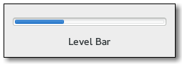

Gtk.LevelBar
Example
Methods
| Inherited: | Gtk.Widget (256), GObject.Object (33), Gtk.Buildable (10), Gtk.Orientable (2) |
|---|
| static | new() |
| static | new_for_interval(min_value, max_value) |
| add_offset_value(name, value) | |
| get_inverted() | |
| get_max_value() | |
| get_min_value() | |
| get_mode() | |
| get_offset_value(name) | |
| get_value() | |
| remove_offset_value(name) | |
| set_inverted(inverted) | |
| set_max_value(value) | |
| set_min_value(value) | |
| set_mode(mode) | |
| set_value(value) |
Virtual Methods
| Inherited: | Gtk.Widget (82), GObject.Object (7), Gtk.Buildable (10) |
|---|
| do_offset_changed(name) |
Properties
| Inherited: | Gtk.Widget (38), Gtk.Orientable (1) |
|---|
| Name | Type | Flags | Short Description |
|---|---|---|---|
| inverted | bool | r/w | Invert the direction in which the level bar grows |
| max-value | float | r/w | Maximum value level that can be displayed by the bar |
| min-value | float | r/w | Minimum value level that can be displayed by the bar |
| mode | Gtk.LevelBarMode | r/w | The mode of the value indicator displayed by the bar |
| value | float | r/w | Currently filled value level of the level bar |
Style Properties
| Inherited: | Gtk.Widget (17) |
|---|
| Name | Type | Default | Flags | Short Description |
|---|---|---|---|---|
| min-block-height | int | 3 | r/w | Minimum height for blocks that fill the bar |
| min-block-width | int | 3 | r/w | Minimum width for blocks that fill the bar |
Signals
| Inherited: | Gtk.Widget (69), GObject.Object (1) |
|---|
| Name | Short Description |
|---|---|
| offset-changed | Emitted when an offset specified on the bar changes value as an effect to Gtk.LevelBar.add_offset_value () being called. |
Fields
| Inherited: | Gtk.Widget (1), GObject.InitiallyUnowned (3), GObject.Object (3) |
|---|
| Name | Type | Access | Description |
|---|---|---|---|
| parent | Gtk.Widget | r |
Class Details
- class Gtk.LevelBar(**kwargs)
Bases: Gtk.Widget, Gtk.Orientable
The Gtk.LevelBar is a bar widget that can be used as a level indicator. Typical use cases are displaying the strength of a password, or showing the charge level of a battery.
Use Gtk.LevelBar.set_value () to set the current value, and Gtk.LevelBar.add_offset_value () to set the value offsets at which the bar will be considered in a different state. GTK will add two offsets by default on the level bar: Gtk.LEVEL_BAR_OFFSET_LOW and Gtk.LEVEL_BAR_OFFSET_HIGH, with values 0.25 and 0.75 respectively.
## Adding a custom offset on the bar
<!-- language="C" --> static GtkWidget * create_level_bar (void) { GtkWidget *widget; GtkLevelBar *bar; widget = gtk_level_bar_new (); bar = GTK_LEVEL_BAR (widget); /<!---->* This changes the value of the default low offset *<!---->/ gtk_level_bar_add_offset_value (bar, GTK_LEVEL_BAR_OFFSET_LOW, 0.10); /<!---->* This adds a new offset to the bar; the application will be able to change its color by using the following selector, either by adding it to its CSS file or using gtk_css_provider_load_from_data() and gtk_style_context_add_provider() * .level-bar.fill-block.level-my-offset { * background-color: green; * border-style: solid; * border-color: black; * border-style: 1px; * } *<!---->/ gtk_level_bar_add_offset_value (bar, "my-offset", 0.60); return widget; }
The default interval of values is between zero and one, but it’s possible to modify the interval using Gtk.LevelBar.set_min_value () and Gtk.LevelBar.set_max_value (). The value will be always drawn in proportion to the admissible interval, i.e. a value of 15 with a specified interval between 10 and 20 is equivalent to a value of 0.5 with an interval between 0 and 1. When Gtk.LevelBarMode.DISCRETE is used, the bar level is rendered as a finite and number of separated blocks instead of a single one. The number of blocks that will be rendered is equal to the number of units specified by the admissible interval. For instance, to build a bar rendered with five blocks, it’s sufficient to set the minimum value to 0 and the maximum value to 5 after changing the indicator mode to discrete.
- static new()
Returns: a Gtk.LevelBar. Return type: Gtk.Widget Creates a new Gtk.LevelBar.
New in version 3.6.
- static new_for_interval(min_value, max_value)
Parameters: Returns: Return type: Utility constructor that creates a new Gtk.LevelBar for the specified interval.
New in version 3.6.
- add_offset_value(name, value)
Parameters: Adds a new offset marker on self at the position specified by value. When the bar value is in the interval topped by value (or between value and Gtk.LevelBar :max-value in case the offset is the last one on the bar) a style class named `level-`@name will be applied when rendering the level bar fill. If another offset marker named name exists, its value will be replaced by value.
New in version 3.6.
- get_inverted()
Returns: True if the level bar is inverted Return type: bool Return the value of the Gtk.LevelBar :inverted property.
New in version 3.8.
- get_max_value()
Returns: a positive value Return type: float Returns the value of the Gtk.LevelBar :max-value property.
New in version 3.6.
- get_min_value()
Returns: a positive value Return type: float Returns the value of the Gtk.LevelBar :min-value property.
New in version 3.6.
- get_mode()
Returns: a Gtk.LevelBarMode Return type: Gtk.LevelBarMode Returns the value of the Gtk.LevelBar :mode property.
New in version 3.6.
- get_offset_value(name)
Parameters: name (str or None) – the name of an offset in the bar Returns: True if the specified offset is found value: location where to store the value Return type: (bool, value: float) Fetches the value specified for the offset marker name in self, returning True in case an offset named name was found.
New in version 3.6.
- get_value()
Returns: a value in the interval between Gtk.LevelBar :min-value and Gtk.LevelBar :max-value Return type: float Returns the value of the Gtk.LevelBar :value property.
New in version 3.6.
- remove_offset_value(name)
Parameters: name (str or None) – the name of an offset in the bar Removes an offset marker previously added with Gtk.LevelBar.add_offset_value ().
New in version 3.6.
- set_inverted(inverted)
Parameters: inverted (bool) – True to invert the level bar Sets the value of the Gtk.LevelBar :inverted property.
New in version 3.8.
- set_max_value(value)
Parameters: value (float) – a positive value Sets the value of the Gtk.LevelBar :max-value property.
New in version 3.6.
- set_min_value(value)
Parameters: value (float) – a positive value Sets the value of the Gtk.LevelBar :min-value property.
New in version 3.6.
- set_mode(mode)
Parameters: mode (Gtk.LevelBarMode) – a Gtk.LevelBarMode Sets the value of the Gtk.LevelBar :mode property.
New in version 3.6.
- set_value(value)
Parameters: value (float) – a value in the interval between Gtk.LevelBar :min-value and Gtk.LevelBar :max-value Sets the value of the Gtk.LevelBar :value property.
New in version 3.6.
- do_offset_changed(name)
Type: virtual Parameters: name (str) –
Signal Details
- Gtk.LevelBar.signals.offset_changed(level_bar, name)
Signal Name: offset-changed
Flags: Parameters: - level_bar (Gtk.LevelBar) – The object which received the signal
- name (str) – the name of the offset that changed value
Emitted when an offset specified on the bar changes value as an effect to Gtk.LevelBar.add_offset_value () being called.
The signal supports detailed connections; you can connect to the detailed signal “changed::x” in order to only receive callbacks when the value of offset “x” changes.
New in version 3.6.
Property Details
- Gtk.LevelBar.props.inverted
Name: inverted Type: bool Default Value: False Flags: r/w Level bars normally grow from top to bottom or left to right. Inverted level bars grow in the opposite direction.
New in version 3.8.
- Gtk.LevelBar.props.max_value
Name: max-value Type: float Default Value: 1.0 Flags: r/w The Gtk.LevelBar :max-value property determaxes the maximum value of the interval that can be displayed by the bar.
New in version 3.6.
- Gtk.LevelBar.props.min_value
Name: min-value Type: float Default Value: 0.0 Flags: r/w The Gtk.LevelBar :min-value property determines the minimum value of the interval that can be displayed by the bar.
New in version 3.6.
- Gtk.LevelBar.props.mode
Name: mode Type: Gtk.LevelBarMode Default Value: Gtk.LevelBarMode.CONTINUOUS Flags: r/w The Gtk.LevelBar :mode property determines the way Gtk.LevelBar interprets the value properties to draw the level fill area. Specifically, when the value is Gtk.LevelBarMode.CONTINUOUS, Gtk.LevelBar will draw a single block representing the current value in that area; when the value is Gtk.LevelBarMode.DISCRETE, the widget will draw a succession of separate blocks filling the draw area, with the number of blocks being equal to the units separating the integral roundings of Gtk.LevelBar :min-value and Gtk.LevelBar :max-value.
New in version 3.6.
- Gtk.LevelBar.props.value
Name: value Type: float Default Value: 0.0 Flags: r/w The Gtk.LevelBar :value property determines the currently filled value of the level bar.
New in version 3.6.